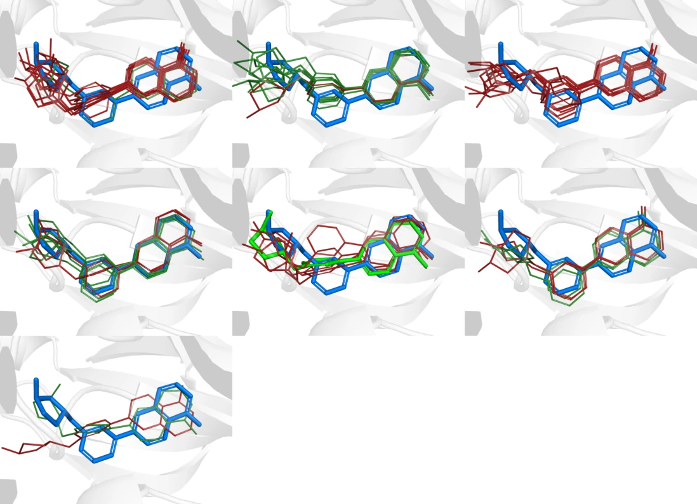

Represent the ligand
Split the ligand into rigid fragments. Each fragment has a translation and a rotation. The protein pocket conditions the model.
MSc dissertation · University of Oxford · 2026
Riemannian flow matching for generative protein–ligand docking
Docking predicts how a small molecule fits into a protein pocket. A model can generate plausible poses that differ substantially in orientation and shape. With a fixed inference budget, should it spend more computation on each pose or generate more candidates?
Supervised by Prof. Garrett M. Morris, Oxford Protein Informatics Group.

Split the ligand into rigid fragments. Each fragment has a translation and a rotation. The protein pocket conditions the model.
Train on straight paths for translations and geodesics for rotations. SigmaFlow-NE retains the Newton–Euler readout. SigmaFlow-TR predicts translation and rotation with separate heads.
Integrate the learned field from random initial fragment poses. Repeat to create a candidate pool, then rank the assembled poses with SigmaDock’s mixed score.
Each strategy uses 1,000 network evaluations per complex. Top-1 success requires the top-ranked pose to have a symmetry-corrected RMSD below 2 Å and pass all PoseBusters validity checks.
| Benchmark | Model | 40 poses × 25 steps | 200 poses × 5 steps |
|---|---|---|---|
| PoseBusters | SigmaFlow-NE | 68.1% | 72.3% |
| PoseBusters | SigmaFlow-TR | 65.2% | 70.4% |
| Astex | SigmaFlow-NE | 81.2% | 87.1% |
| Astex | SigmaFlow-TR | 82.4% | 92.9% |
PoseBusters uses a temporal split. The Astex set includes 47 of 85 complexes that occur in PDBbind v2020 training data.
At 40 poses and 25 steps, the reproduced SigmaDock diffusion baseline reached 64.5% on PoseBusters and 74.1% on Astex.
More draws helped cover distinct binding modes. In the thesis analysis, an oracle that selected a mode containing a valid, near-native pose lifted Top-1 success by 10–13 percentage points. That is an estimate of the room for better mode selection.
Each color marks a cluster of similar poses. The preview isolates two competing modes while keeping the crystallographic reference in blue. Open the explorer to compare models and change the clustering threshold.
Watch an ATP pose for PDB entry 7KRU move from its initial draw through successive sampling steps. Open the viewer to compare diffusion and flow matching step by step.